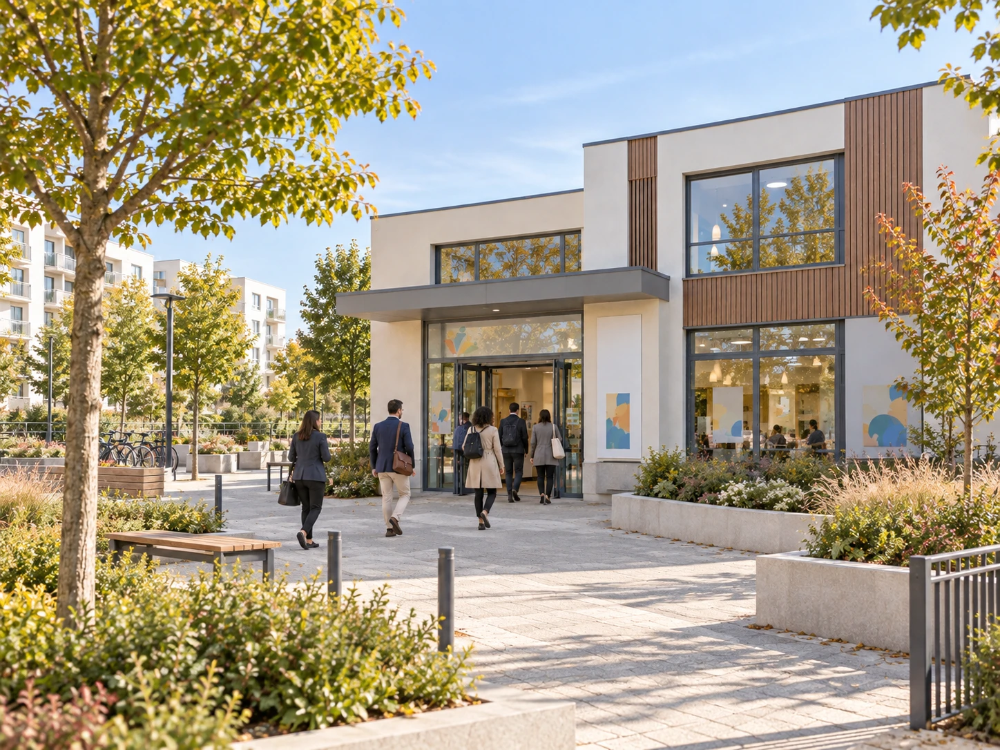

Nos actions
Former, intervenir et accompagner : des actions complémentaires pour faire vivre l’éducation populaire.

Interventions structures
Fourmi’Action mène des animations de proximité au cœur des quartiers et des centres sociaux pour libérer la parole et renforcer le pouvoir d'agir des jeunes et des familles.
Ateliers, échanges et projets collectifs permettent aux jeunes, aux familles et aux habitants de prendre la parole. Notre projet privilégie les démarches de proximité, dans les centres sociaux, les associations locales et les espaces de quartier.
Échanger sur votre projet
Gestion d'accueils collectifs de mineurs
Enfin, nous organisons et accompagnons des accueils de loisirs et des séjours éducatifs conçus comme des espaces ouverts, solidaires et citoyens.
Les accueils collectifs de mineurs (ACM) sont des espaces de coopération, de créativité et de responsabilité. Les enfants et les jeunes participent aux choix de la vie collective dans un cadre sécurisant.
Échanger sur votre projet
Formations BAFA/BAFD
Fourmi’Action forme des animateurs et directeurs qualifiés grâce à des sessions BAFA et BAFD axées sur la pratique concrète, la gestion de groupe et la sécurité globale.
Notre projet de formation articule les savoirs, les savoir-faire et le savoir-être. La pratique, la gestion de groupe et la posture de l’animateur occupent une place centrale.
Découvrir le BAFA